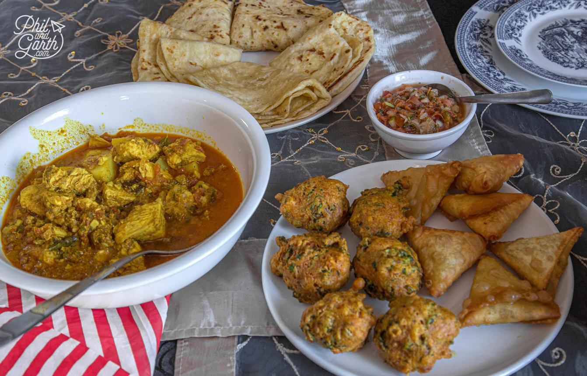
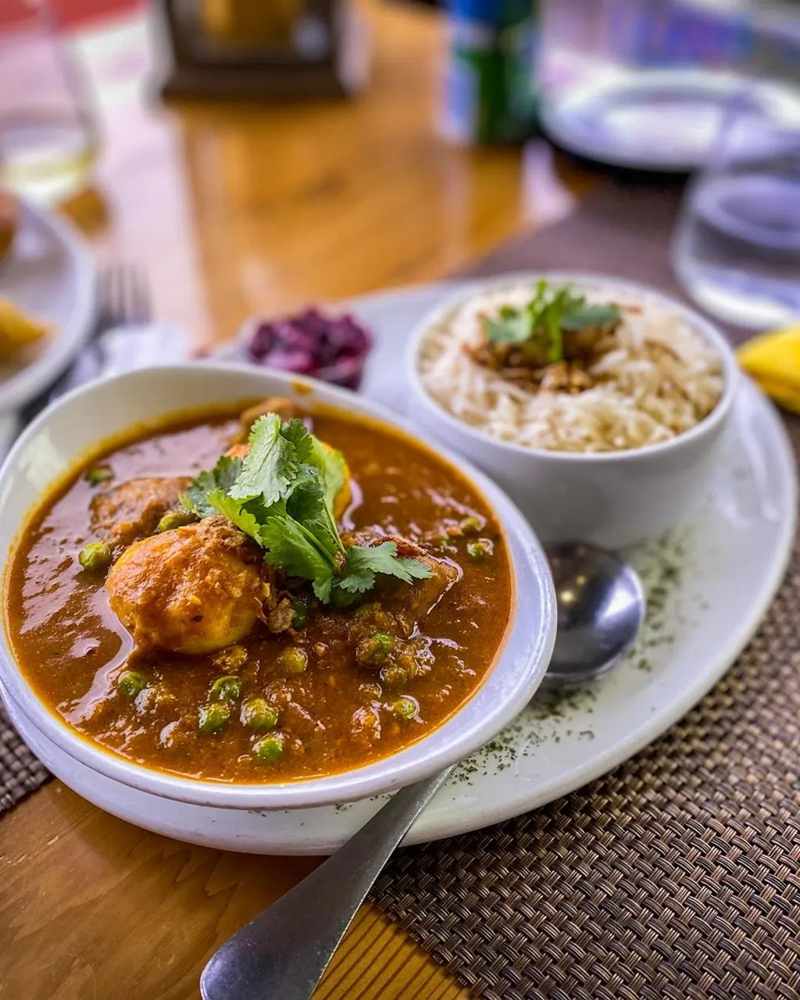
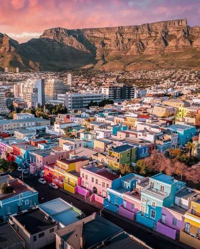
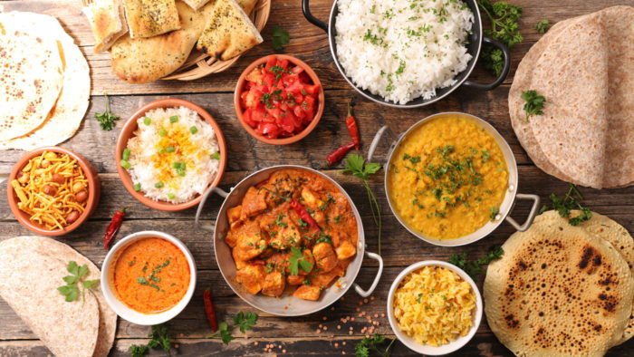
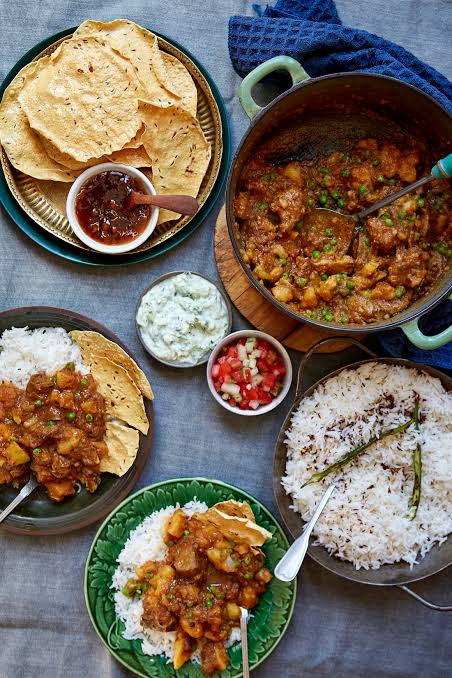
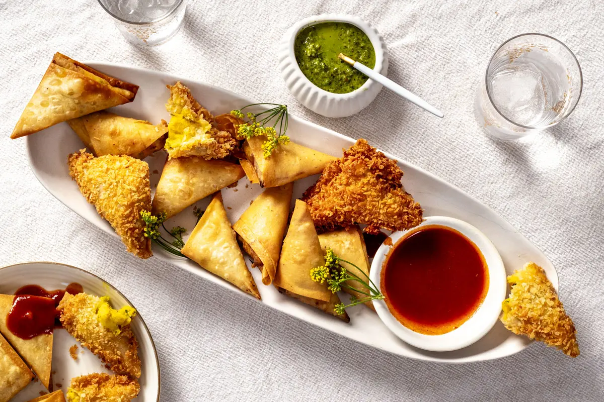

Our Gallery
Explore the flavours, food and colourful cultural atmosphere of Bo-Kaap Kombuis.
Food and Cultural Experience






Explore the flavours, food and colourful cultural atmosphere of Bo-Kaap Kombuis.





